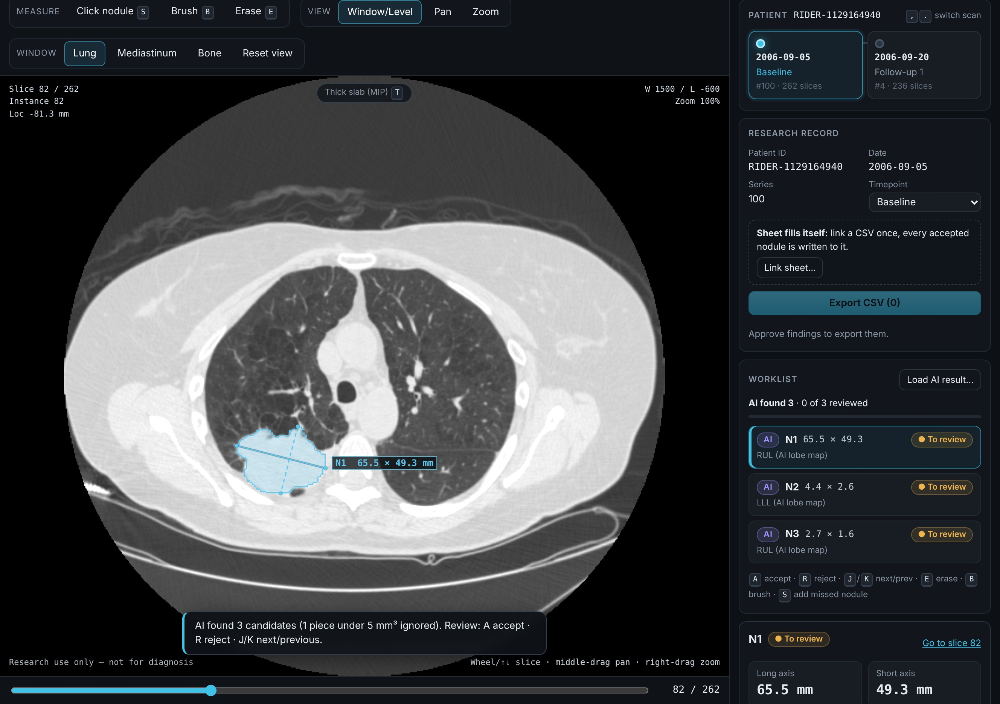
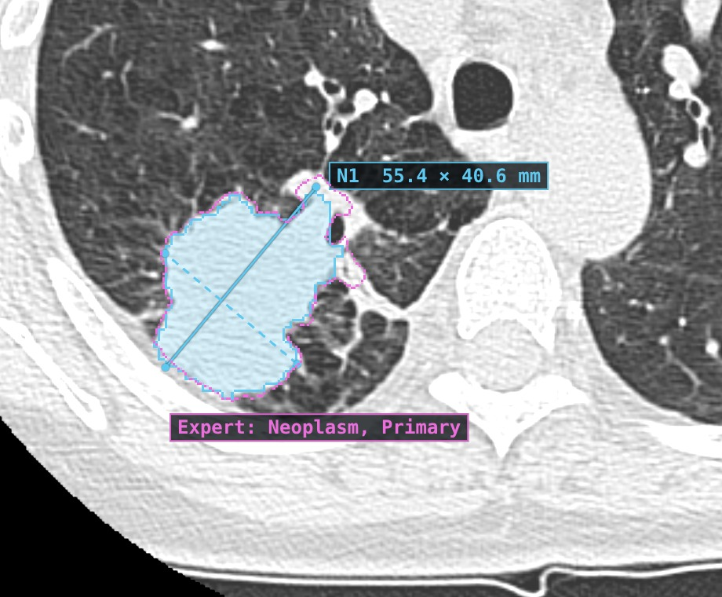
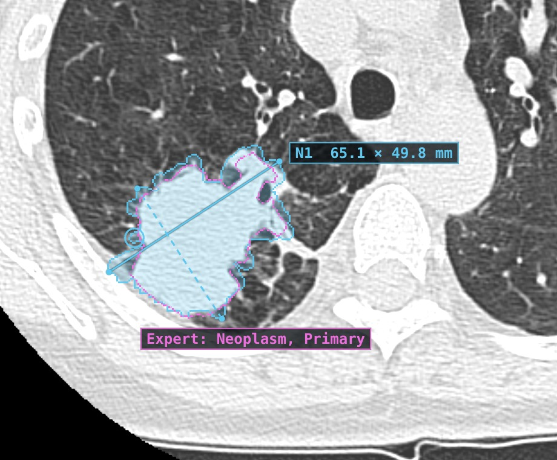
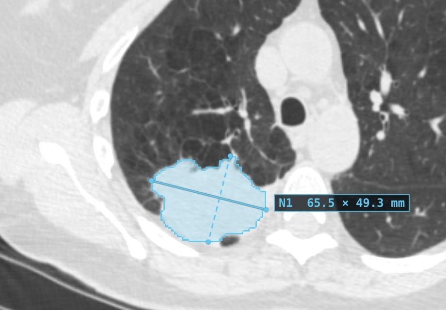
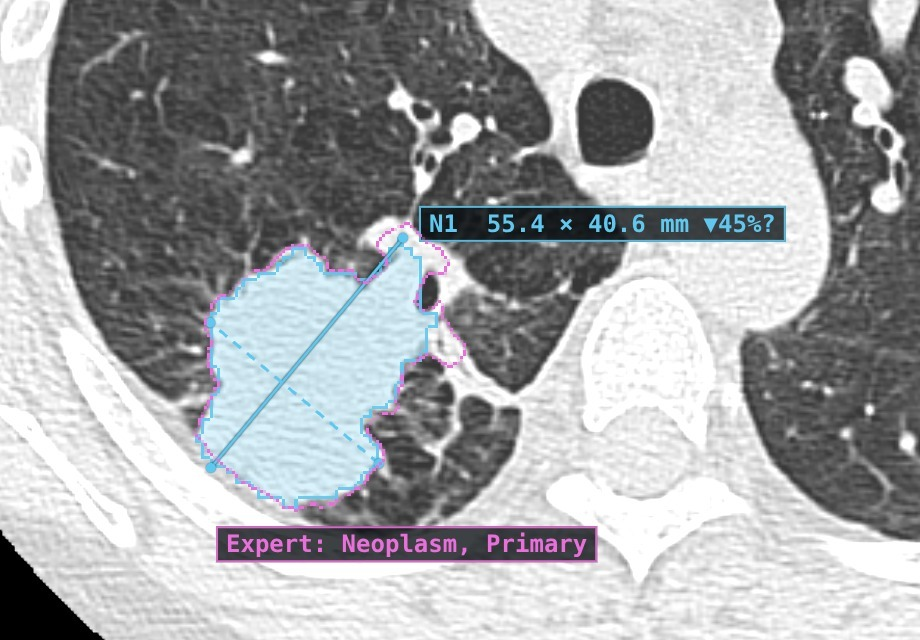

Daniel's current baseline scan, step by step: his own time estimates, not measured by us.



| Follow-up scan, N1 | Long axis | Short axis | Volume | Dice vs expert |
|---|---|---|---|---|
| AI, as proposed | 55.4 mm | 40.6 mm | 43.76 mL | 0.87 |
| After correction | 65.1 mm | 49.8 mm | 46.79 mL | 0.87 |
| Expert (RIDER-LungCT-Seg) | 59.8 mm | 44.3 mm | 54.99 mL | — |


| N1, AI outline on both scans | Baseline | Follow-up | Change |
|---|---|---|---|
| Long axis | 65.5 mm | 55.4 mm | −10.1 mm (−15.5 %) |
| Short axis | 49.3 mm | 40.6 mm | −8.7 mm (−17.6 %) |
| Volume | 79,677 mm³ | 43,760 mm³ | −35,917 mm³ (−45.1 %) |
What we measured, and what we have not measured yet. The 50 % target is shown as a goal, not as a result.
| Open sample → AI worklist ready | 11.5–12.3 s |
| Accept (A) → saved, Type/Lobe filled | 0.2–0.8 s |
| Switch to follow-up → pairs shown | 8.6–9.1 s |
| Export CSV → file written | 0.1–0.3 s |
"The workflow of AI-assisted finding followed by my manual review and correction is exactly what I need … Before I can call this a time-saver, we'll need to time the full process … I'd also like to see how it handles those smaller, hazier nodules."